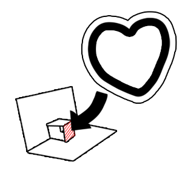

Apply glue to the back of the cut-out image and attach it to the flap you made in the previous step. The folded flap will be divided into two rectangles — be careful to glue the image onto only one of them.